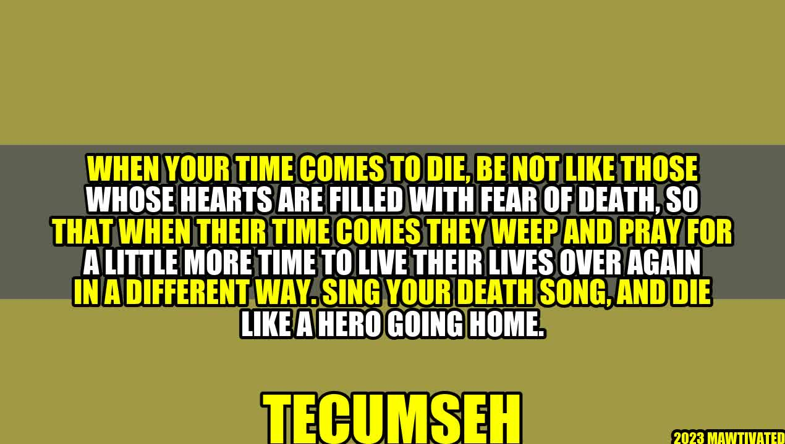

Die Like A Hero Going Home

Once upon a time, there was a man named John, who was diagnosed with terminal cancer. Upon hearing the news, John's initial reaction was fear and despair. However, after some reflection, he decided to approach his impending death differently. Instead of seeing it as the end of his life, he saw it as an opportunity to live his last days fully and joyfully. John created a bucket list, which included traveling to his dream destinations, reconciling with estranged friends and family, and trying new things he never had the courage to do before. In the end, John passed away peacefully, with no regrets, and left a lasting impact on the world with his courage and positivity.
John's story encapsulates the essence of Tecumseh's quote, "Sing your death song, and die like a hero going home." This quote encourages us to embrace our mortality, and to live our lives fearlessly and purposefully. We all know that death is inevitable, but it's how we approach our death that defines the quality of our lives.
Who is Tecumseh?
Tecumseh was a Native American leader of the Shawnee tribe, who lived in the late 18th and early 19th century. He was known for his bravery in defending his people's lands and culture against white settlers. Despite facing great odds, Tecumseh led his people with courage and wisdom, and his legacy continues to inspire generations of Native Americans today. His quote on death is a testament to his philosophies on life and leadership.
Examples of Heroes Who Embraced Their Deaths
- Nelson Mandela: The former South African President, Nelson Mandela, is an icon of courage and leadership. During his long imprisonment, he never gave up his belief in his cause, and emerged from prison more determined than ever to fight for a free and equal society. When he died at the age of 95, the whole world mourned his loss, but celebrated his life as a hero and visionary.
- Steve Jobs: The Apple co-founder and inventor, Steve Jobs, was known for his revolutionary ideas and boldness in innovation. When he was diagnosed with pancreatic cancer, he faced his death with the same courage and determination he used in his work. Instead of giving up, he continued to inspire and motivate people with his products and ideas until the very end.
- Rosa Parks: The civil rights activist, Rosa Parks, is a legend in American history for her role in the Montgomery Bus Boycott. When she died in 2005, at the age of 92, she was remembered as a hero who stood up for justice and changed the world.
"Courage is not the absence of fear, but rather the assessment that something else is more important than fear." - Franklin D. Roosevelt
In each of these examples, these heroes faced their deaths with bravery and determination. They refused to let fear or despair define their final days, and instead, they lived their lives to the fullest until the end. They are a testament to the power of embracing our mortality and living purposefully.
Practical Tips on Singing Your Death Song
- Create a bucket list: Write down all the things you want to do before you die. It can be anything from traveling to trying new foods or learning a new skill. Having a clear list of goals can help you stay focused and motivated.
- Express gratitude: Take time to reflect on the people and things you are grateful for in your life. Express your appreciation to those who have made a positive impact on your life.
- Face your fears: We all have fears, but it's important to not let them hold us back. Face your fears head-on and see yourself grow stronger in the process.
Conclusion: Die Like A Hero Going Home
- Embrace your mortality: Death is a natural part of life, and by embracing it, we can live more fully and intentionally.
- Live purposefully: We all have a unique purpose in life. Finding and pursuing that purpose can help us feel fulfilled and content.
- Die like a hero: No matter how we die, we can approach it with courage and dignity. We can leave behind a legacy of inspiration and positivity, like Tecumseh, Nelson Mandela, Steve Jobs, and Rosa Parks.
Curated by Team Akash.Mittal.Blog
Curated by Team Akash.Mittal.Blog
Share on Twitter Share on LinkedIn